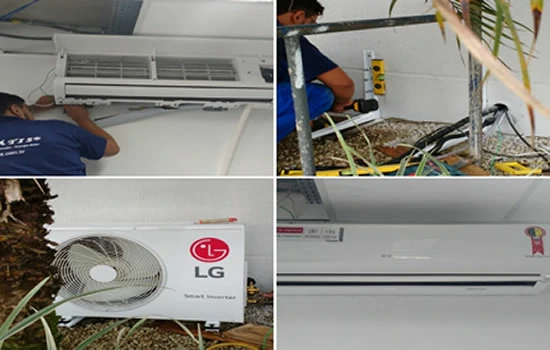

Instalação de ar-condicionado em Curitiba com garantia
A Climátis realiza instalação de ar-condicionado em Curitiba com interligação em cobre, pressurização com nitrogênio, vácuo e testes de funcionamento. Os materiais e procedimentos seguem as especificações da instalação contratada e as recomendações do fabricante.
Para solicitar orçamento, informe o bairro, o modelo do aparelho e as condições do local. Confira abaixo os materiais previstos, os limites de tubulação e os preparativos que ficam sob responsabilidade do cliente.

A instalação define desempenho, segurança e vida útil
A instalação do aparelho de ar-condicionado é vital para a climatização do ambiente e para a vida útil do equipamento.
Quando feita de maneira inadequada, pode causar mau funcionamento, vazamentos e até danificar o compressor. Por isso a Climátis realiza a instalação segundo as normas dos fabricantes.
A Climátis Ar Condicionado e Refrigeração é uma empresa familiar de Curitiba, criada em 2014. Na contratação, confira o escopo técnico, as condições de acesso e os termos da garantia de instalação.
Ler artigo sobre instalação no Blog ClimátisA garantia de instalação é de 12 meses para aparelhos novos e de 3 meses para aparelhos usados, contados da conclusão do serviço, conforme o certificado e os termos publicados pela Climátis. Essa cobertura se refere à instalação e não substitui a garantia do fabricante do equipamento.
Ver garantia ClimátisO que você recebe com a instalação Climátis
Você pode escolher a instalação convencional ou a instalação com manutenção preventiva inclusa no primeiro ano.
Algumas instalações feitas pela Climátis
Confira exemplos de instalações de ar-condicionado em diferentes ambientes, modelos e marcas.
O que está incluído na instalação
O escopo abaixo descreve os procedimentos, materiais e responsabilidades previstos para a instalação. O tipo de aparelho, o percurso da tubulação, a drenagem e o acesso às unidades precisam ser considerados no orçamento. Confira os limites informados e apresente as particularidades do imóvel antes da contratação.
A interligação frigorígena utiliza tubos de cobre e isolamento térmico. A pressurização com nitrogênio permite verificar possíveis vazamentos na linha; o vácuo integra a preparação do circuito antes da operação. A drenagem conduz a água da evaporadora, e os testes finais verificam o funcionamento do conjunto. São etapas com funções diferentes e devem seguir as recomendações aplicáveis ao equipamento.
Instalação inclui
- Furação na parede para passagem da linha frigorígena
- Fixação das unidades interna e externa
- Interligação elétrica das unidades e ao ponto de força
- Interligação frigorígena com tubos de cobre
- Isolamento da tubulação com materiais resistentes
- Acabamento final, pressurização com nitrogênio, vácuo, testes e instruções de uso
Especificações e materiais
- Tubulação de cobre até 3 metros para Split Hi Wall
- Tubulação de cobre até 5 metros para Split Piso Teto e Cassete
- Cabo PP de interligação entre unidades
- Mangueira cristal para escoamento da água da evaporadora
- Isolamento térmico individual para tubulação de cobre
- Em ar Inverter, isolamento térmico individual de alta resistência
Responsabilidade do cliente
- Serviços de alvenaria, carpintaria, pintura, concreto, gesso, vidro e serralheria
- Ponto elétrico com disjuntor para o ar-condicionado
- Guindaste ou plataforma metálica, quando necessário
Como preparar o pedido de orçamento
Antes da instalação, confirme as regras do condomínio e as condições de acesso às unidades. O ponto elétrico com disjuntor e os serviços civis indicados na lista são de responsabilidade do cliente. Quando necessários, guindaste ou plataforma também precisam ser considerados. Se ainda estiver preparando a obra, conheça a infraestrutura para ar-condicionado e informe essa situação no pedido de orçamento.
Instalação com manutenção preventiva no primeiro ano
O combo inclui limpeza completa das unidades interna e externa, aplicação de bactericida, verificações elétricas, testes de funcionamento e checagem de vazamento de fluido refrigerante.
A manutenção preventiva no primeiro ano é uma opção de contratação, com uma visita por semestre conforme a oferta descrita nesta página. Confirme as condições do combo no orçamento. Essa opção não está automaticamente incluída em toda instalação.
Se você administra um ambiente comercial e precisa organizar o acompanhamento do sistema, conheça também o PMOC para ar-condicionado. A instalação, a manutenção preventiva e o plano de manutenção têm finalidades diferentes; consulte o escopo de cada serviço para sua necessidade.
Instalamos e fazemos manutenção dos principais fabricantes do mercado.
Dúvidas antes de contratar a instalação
Quais informações preciso enviar para pedir orçamento de instalação?
Informe o bairro, o tipo de ambiente, a quantidade de aparelhos e, se souber, marca, modelo e capacidade. Diga se o equipamento é novo ou usado, se existe infraestrutura e como é o acesso ao local das unidades. Fotos podem ajudar na conversa inicial. Confirme com a Climátis se será necessária uma avaliação no local para definir o escopo.
Quais materiais estão incluídos e qual é o limite de tubulação?
A página prevê tubulação de cobre de até 3 metros para Split Hi Wall e de até 5 metros para Split Piso Teto e Cassete, além dos materiais descritos no escopo. Se o percurso ou a instalação tiver condições diferentes, informe isso no pedido de orçamento. Não presuma que qualquer metragem ou material adicional esteja incluído.
Já tenho infraestrutura pronta. Ela pode ser aproveitada?
Informe que já existe infraestrutura e apresente o modelo do aparelho e as condições conhecidas da tubulação, do ponto elétrico e da drenagem. O aproveitamento precisa ser avaliado para o equipamento e o local. A existência da infraestrutura, sozinha, não confirma que ela esteja adequada nem define o orçamento da instalação.
O que preciso preparar no imóvel antes da instalação?
Confira as condições de acesso e as regras do condomínio. O escopo atribui ao cliente o ponto elétrico com disjuntor, os serviços de alvenaria e demais intervenções civis listadas na página. Guindaste ou plataforma, quando necessários, também são de responsabilidade do cliente. Apresente essas condições antes de contratar para evitar dúvidas sobre o serviço previsto.
A instalação inclui nitrogênio, vácuo e testes?
Sim. Esses procedimentos já fazem parte do escopo publicado pela Climátis. A pressurização com nitrogênio permite verificar possíveis vazamentos na linha frigorígena, o vácuo faz parte da preparação do circuito e os testes verificam o funcionamento após a montagem. As etapas têm funções diferentes e seguem as recomendações aplicáveis ao equipamento.
Como é definida a drenagem? Toda instalação precisa de bomba de dreno?
A drenagem depende da posição da evaporadora e das condições do local para escoar a água. O escopo publicado inclui mangueira cristal, e a galeria mostra um exemplo com bomba de dreno. Isso não significa que toda instalação precise de bomba ou que ela esteja incluída em qualquer orçamento. Confirme a solução e os materiais previstos para o seu caso.
Qual é a garantia da instalação?
Os termos publicados pela Climátis informam 12 meses para a instalação de aparelho novo e 3 meses para aparelho usado, contados da conclusão do serviço. A cobertura se refere à instalação executada pela empresa e tem condições e exclusões próprias. Ela não substitui a garantia do fabricante. Consulte os termos da garantia Climátis antes de contratar.
Quanto custa a instalação e como confirmar a programação do serviço?
Esta página não apresenta um preço único para todas as instalações. Informe o aparelho e as condições do imóvel para solicitar orçamento. Confirme o escopo, as condições comerciais e a programação do serviço com a Climátis antes da contratação.
Solicite orçamento de instalação de ar-condicionado em Curitiba
Conte onde será a instalação, qual é o aparelho e se já existe infraestrutura. Informe o bairro e as condições de acesso para orientar o pedido de orçamento. Os materiais, serviços e condições de execução precisam estar claros antes da contratação.